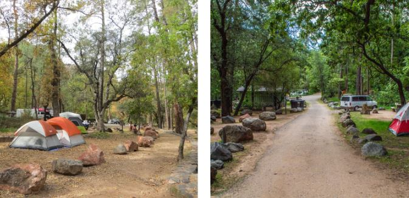
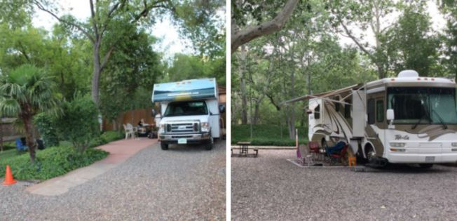

10 Best Free Camping Campsites In Sedona Arizona

Sedona is a desert town in Arizona. People love this town for its beautiful red-rock buttes, pine forests, and steep canyon walls that make great back-drops for pictures. This is the perfect town to take the whole family camping. It’s noted for its mild climate and vibrant arts community. Uptown Sedona is dense with New Age shops, spas and art galleries. On the town’s outskirts, numerous trailheads access Red Rock State Park, which offers bird-watching, hiking and picnicking spots.
MANZANITA CAMPGROUND

- Camping
- Fishing
- Swimming
- Campfire Rings
- Water Spigot
- Tables
- Accessible Pit Toilets
- Fire Pit
- Pets Allowed
- Picnic Table
CRESCENT MOON CAMPGROUND
- Hiking
- Swimming
- Picnicking
- Photography
- Biking
- Drinking Water
- Accessible Pit Toilets
- Accessible Grills
- Accessible Picnic Area
- Grills
- Paved Parking
- Accessible Scenic Overlook
- Pets Allowed
- Pit Toilets
- Paved Pathways
- Picnic Tables
- Picnic Area
RANCHO SEDONA RV PARK
Pine Flat Campground
Verde Valley RV Resort & Campground
Cave Springs Campground
Loy Butte Road
Forest Road 535 BLM Camping
- Sedona is located at a high elevation
Location: 5900 N State Rte 89A, Sedona, AZ 86336.
This campground is open year-round and is tent-only. Campsites here fill up very quick as it has only gotten more and more popular as the years go by. You can enjoy swimming holes and and fishing that stretch across the Oak Creek or enjoy the magnificent scenery and beautiful wildlife that it has to offer. It is always best to reserve a spot ahead of time before coming here.
Nearby attractions to the Manzanita Campground
One of the most popular attractions that close to the Manzanita Campground is
Activities
Amenities

The Crescent Moon Campground
Activities available-
Fishing
Location: 135 Bear Wallow Lane Sedona, Arizona 86336
Visitor who come here usually spend more than one week. There are many attractions to keep everyone busy for days on end. Attractions such as a sunset jeep tour, amazing restaurants, yoga classes and many more. Below is a list of some of the other attrations that might be what you are looking for.
Cities close to Rancho Sedona Rv Park
| In State | Miles away | Travel Time |
| Grand Canyon | 106 | 2.0 hrs |
| Lake Havasu | 234 | 4.0 hrs |
| Payson | 85 | 1.5 hrs |
| Jerome | 28 | 0.5 hrs |
| Flagstaff | 27 | 0.8 hrs |
| Kingman | 175 | 3.0 hrs |
| Monument Valley | 210 | 4.0 hrs |
| Page/ Lake Powell | 167 | 3.0 hrs |
| Williams | 60 | 1.0 hrs |
| Phoenix | 116 | 2.0 hrs | Yuma | 284 | 5.0 hrs |
| Prescott | 56 | 1.0 hrs |
| Tucson | 210 | 4.0 hrs |
| Out of State | Miles away | Travel Time |
| Las Vegas | 267 | 5.0 hrs |
| Laughlin | 205 | 3.5 hrs |
| Los Angeles | 457 | 8.0 hrs |
| Albuquerque | 390 | 6.5 hrs |
Pine Flat Campground is a preferred outdoor camping site in breathtaking Oak Creek Canyon in Arizona's Coconino National Forest. The camping site is snuggled in a forest canyon near the widely known community of Sedona, Arizona, as well as its red rock high cliffs. The views is unequaled, the stream is filled with trout, and also offers swimming, treking and also birdwatching spots can be accessed from the center.
Location: 135 Bear Wallow Lane Sedona, Arizona 86336

The Verde Valley RV Resort and campground is located on the banks of the Verde River. Located about 30 - 40 minutes from Sedona, the Verde Valley is a resort that features open space that is perfect for rvers and tent campers, and has ample shade. Unlike some other sites, this resort and campground has large sites that offer full hookups. There are flush toilets and showers available at the comfort station. Be prepared to enjoy the mini golf course, the pool, the recreational center, and a horseshoe pit.
Location: AZ-89A, Sedona, AZ 86336
This camping site gets full very quick; bookings can be made beforehand for 21 of the 80 campgrounds.
The campsites do not consist of hookups, nonetheless there are restricted services offered. Trash collection, restrooms and also water faucets can be located throughout the premises. You'll obtain added savings if you have the National Park senior pass.
This is an economical camping area with terrific accessibility to hiking trails. Comparable to The Main Drag 525, this camping site lies on Coconino National Forest Land.
Location: Sedona, AZ
Loy Butte Road has been awarded the Campendium Campers Choice Award 2 years in a row. This award goes out to 24 of the best campground around based on reviews made by regular people.
There are no amenities provided here so you will have to come fully prepared to be fully self-sufficient. The campground is fully off-grid but has been said to provide good cell service. This campground will be perfect for someone who does not like busy campgrounds.
Location: Flagstaff, AZ 86001
The roadway is long and also has numerous outdoor camping places offered within the initial 5 miles. The weekend will certainly draw crowds, yet the weekdays remain incredibly slow.
This totally free camping site splits the difference. It's located in between Sedona and Flagstaff. In addition, situated at a greater altitude, Forest Road 535 will certainly keep you cool throughout the day.
Important information about Sedona Arizona
Here are a couple things to remember or know before making the trip to camp in Sedona Arizona.
Even though Sedona is a desert, it is located at an elevation of roughly 4300 feet above sea level. Even though Sedona is a desert, it is located at an elevation of 4,300 feet above sea level. This means that if you are camping in Sedona, you will want to be prepared for warmer days and cool nights. Even if you are visiting Sedona in the summertime, plan for the nights to be cooler. This means dressing in layers, packing warm blankets for sleeping, and making sure you have enough wood for a campfire.
The ultimate getaway can be had at a campground. Any of these campground on this will will be like a home away from home. Choose one and take the whole family to enjoy the amenities, activities, and all the different people you will meet. Campgrounds are the perfect place to meet people as most people who camp tend to be jovial in nature.